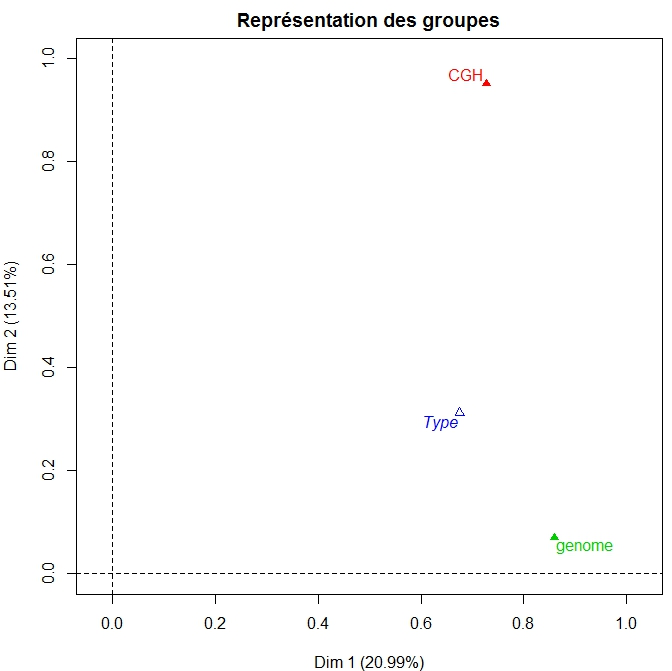
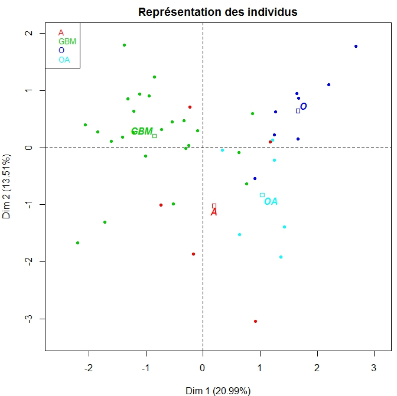
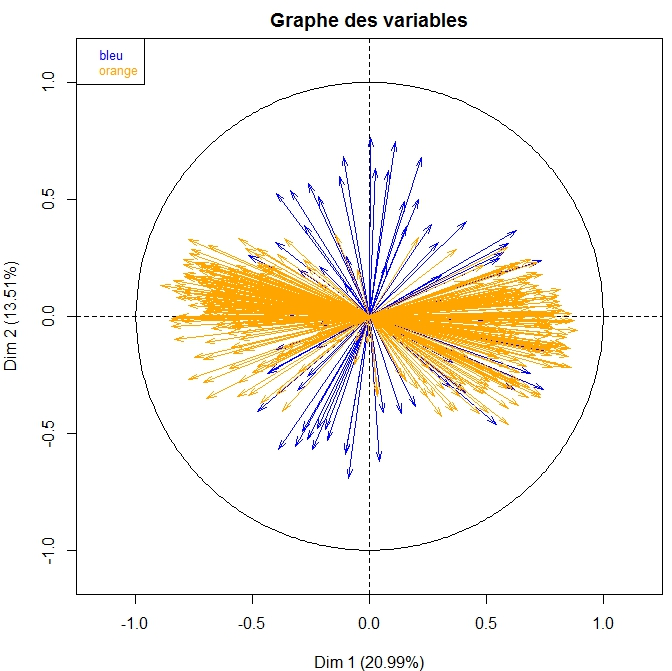
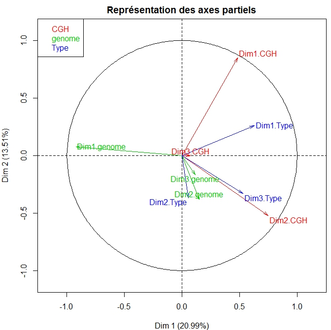
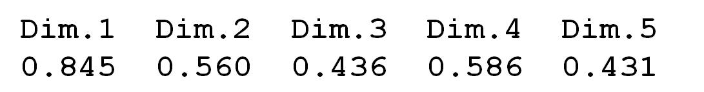
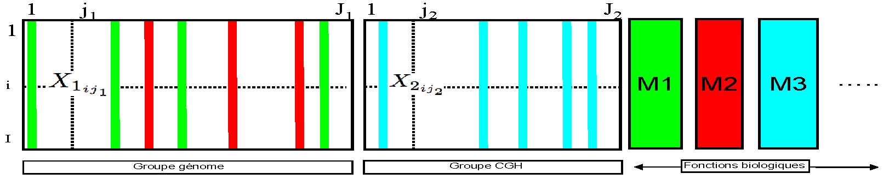
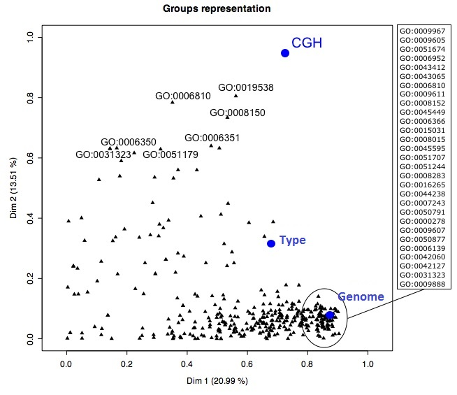

F. Husson website
IntroductionPrincipal Component AnalysisCorrespondence Analysis Multiple Correspondence Analysis ClusteringMultiple Factor AnalysisTo concludeForum
Forty-five patients with brain cancer have been grouped according to which type of tumor they had: oligodendroglioma (O), astrocytoma (A), mixed oligo-astrocytoma (OA) and glioblastoma (GBM), the latter having the highest grade. Each tumor was analyzed in two different ways: in terms of the genome (genome) and in terms of the transcriptome (CGH). We are not going to go into the details of how these two analyses were done, biologically speaking, because it is quite complicated, as well as unnecessary for answering the questions below. The data table corresponding to measurements taken on the genome gives 356 variables, while the CGH data has 68. The qualitative variable corresponding to tumor type is also provided. We run MFA with the 356 genomic and 68 CGH variables as active. The tumor type variable is placed, alone, in a supplementary group.
Q1) The first three eigenvalues of the CGH group are 13, 11 and 6, while those of the genomic group are 163, 36 and 22. One group has an Lg of 2.506, whereas the other has an Lg of 1.098. Which group has the Lg of 2.506? the CGH group the genomic group
Q2) Here is the graph of the MFA's groups.  From this graph, we can say that: the two groups of variables differentiate between the individuals in the exact same way the first two dimensions of the MFA are present in the CGH group the first two dimensions of the MFA are present in the genomic group the genomic group cannot have only one dimension, and cannot be associated with the third dimension of the MFA
Q3) Here is the individuals plot of the MFA.  From this plot and the groups plot, we can say that: the genomic group allows us to discriminate the individuals with a GBM-type tumor from the others, like the 1st dimension of the MFA does the CGH group allows us to discriminate the individuals with a GBM-type tumor from the others, like the 1st dimension of the MFA does the genomic group allows us to discriminate the individuals with an A or OA-type tumor from the others, like the 2nd dimension of the MFA does the CGH group allows us to discriminate the individuals with an A or OA-type tumor from the others, like the 2nd dimension of the MFA does
Q4) Here is the categories plot (i.e., tumor types) along with their partial points. From this graph, and supposing that the projection onto the plane does indeed indicate the differences in the overall space, we can say that the GBM tumor type is characterized quite similarly by the two groups of variables the O tumor type is characterized quite similarly by the two groups of variables the O and OA tumor types are better separated by the CGH group's data than by the genomic group's
Q5) Here is the variables plot.  the variables of the orange group correspond to the CGH group's variables the variables of the blue group correspond to the CGH group's variables
Q6) From looking at the variables plot and individuals plot, we can say that individuals with a GBM-type tumor have large values for genes which are projected to the left of the plot individuals with a GBM-type tumor have small values for genes which are projected to the right of the plot individuals with a GBM-type tumor have small values for genes which are projected to the left of the plot
Q7) Here is the partial axes plot with the projection of the first three dimensions of each group.  By looking at this graph, we can say that the first dimension of the genomic group is strongly (negatively) related to the first axis of the MFA the first dimension of the CGH group is strongly related to the first axis of the MFA the individuals plot of the PCA on the CGH group's data has no shared structure with the mean configuration of the MFA points the individuals plot of the PCA on the CGH group's data has a shared structure with the mean configuration of the MFA points (when allowing for rotation)
Q8) Here is the ratio of the between-class inertia over the total inertia, dimension by dimension, of the partial points.  From these ratios, we can say that each individual has its partial coordinates (relatively) close to its mean coordinate value in the 1st dimension half of the individuals have their partial coordinates close to their mean coordinate value in the 2nd dimension in the 3rd dimension, some individuals have their partial coordinate values fairly spread out
Q9) Some supplementary information can be included here. It concerns the biological processes in which genes are active. A biological process can be seen as a group of genes (i.e., a group of variables). The same gene can take part in several biological processes. We can consider each biological process like a group of supplementary variables. We therefore go back to the earlier table and add to it genes active for each biological process (see the table below).  Each biological process is a group of variables which will be taken as a supplementary variable in the MFA (which avoids having genes involved in a given process contributing several times to the construction of the MFA axes). The biological processes with large-valued coordinates in the 1st dimension are made up exclusively of variables that are positively correlated with the 1st dimension of the MFA exclusively of variables that are negatively correlated with the 1st dimension of the MFA exclusively of variables that are positively or negatively correlated with the 1st dimension of the MFA of variables that are positively correlated with the 1st dimension of the MFA
Q10) For interpretation purpose,  many biological processes have a large coordinate value on the 1st axis, which means that many processes are involved in the GBM compared with the other tumor types we can sort the processes in terms of their coordinate values on the 2nd axis, thus allowing us to see which processes are involved differently in the O and OA tumor types
Score = Correct answers: